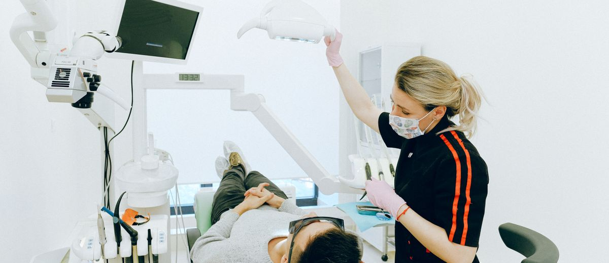

Las cinco estrellas no se ganan en el sillón

Hay algo que me gusta hacer cuando tengo un rato: leer las reseñas de otras clínicas. No las mías. Las de la competencia.
Y siempre aparece lo mismo.
"Me explicaron todo antes de empezar." "Me llamaron al día siguiente para ver cómo estaba." "La recepcionista fue muy amable." "No me hicieron esperar."
Eso es lo que escribe la gente. Eso es lo que recuerdan.
No el tratamiento. No la técnica. No el material.
La forma en que los trataron.
El problema con esto
Llevas años estudiando. Formaciones, cursos, tecnología, equipamiento. Tu nivel técnico es real. No me cabe duda.
Y a pesar de eso, lo que decide si un paciente te da cinco estrellas o tres rara vez tiene que ver con lo que hiciste dentro del sillón.
Tiene que ver con si alguien cogió el teléfono a tiempo. Con si el presupuesto llegó esa misma tarde o tres días después. Con si hubo una llamada de seguimiento al día siguiente del tratamiento.
Eso es lo que diferencia una reseña de tres estrellas de una de cinco.
El nivel técnico es el suelo, no el techo
No digo que haya que bajar el nivel técnico. Eso sería un error. Lo técnico te da el derecho de estar en el mercado.
Pero si crees que con hacer bien el tratamiento ya tienes ganado al paciente, te estás equivocando.
El buen trabajo clínico es lo que se da por supuesto. Nadie escribe una reseña de cinco estrellas para decir "hicieron bien su trabajo". Eso lo da por hecho.
Lo que convierte un tratamiento correcto en una reseña brillante es la experiencia alrededor. Antes. Después. En todo lo que pasa fuera del sillón.
El paciente que se siente cuidado vuelve, trae a su familia y escribe la reseña sin que nadie se lo pida.
Qué buscar en tus reseñas ahora mismo
Entra en tu ficha de Google. Lee las últimas diez reseñas de cuatro y cinco estrellas. Anota qué mencionan además de la calidad técnica.
Lo más probable es que aparezca esto:
- La atención: que les explicaron qué iba a pasar, que no se sintieron un número.
- La espera: que entraron puntual o que el retraso fue mínimo y bien gestionado.
- El contacto posterior: que alguien preguntó cómo estaban al día siguiente.
- La recepción: que la llamada fue rápida, amable y eficiente.
Esos cuatro puntos no los controla el clínico. Los controla el proceso.
Tres cambios que puedes hacer esta semana
No hace falta un plan enorme. Hay tres ajustes que se pueden implementar en días y que tienen impacto directo en cómo te recuerdan:
- Llamada de seguimiento a las 24 horas. Una llamada breve. "Hola, somos de la clínica. ¿Cómo está? ¿Tiene alguna duda?" No vende nada. Solo cuida. Eso es lo que los pacientes recuerdan.
- Explicación antes del tratamiento. Un minuto para explicar qué vas a hacer en versión humana, no técnica. "Voy a hacer esto, va a durar unos veinte minutos, es normal que luego notes esto." Ese minuto vale por mil euros de publicidad.
- Tiempo de espera visible. Si hay retraso, se avisa. "Siento el retraso, en diez minutos está con usted." El paciente que espera sin información se pone nervioso. El que espera con información espera tranquilo.
Ninguno de los tres cuesta dinero. Solo atención.
Las reseñas también son SEO
Las reseñas positivas y frecuentes son el factor más importante en el posicionamiento local de Google. No el presupuesto en anuncios. No el diseño de la web.
Las reseñas.
Y las reseñas espontáneas —las que la gente escribe sin que nadie se lo pida— siempre vienen de una experiencia que les sorprendió. Para bien.
En clínicas como Ocean Clinik, con centros en Tenerife y La Palma, la experiencia de paciente forma parte del sistema desde la primera llamada hasta el seguimiento posterior. No es un extra. Es parte del protocolo.
Si quieres estructurar ese proceso en tu clínica, en Método EBA trabajamos exactamente eso: convertir la atención en un sistema que genera reputación, fidelización y crecimiento sostenible.